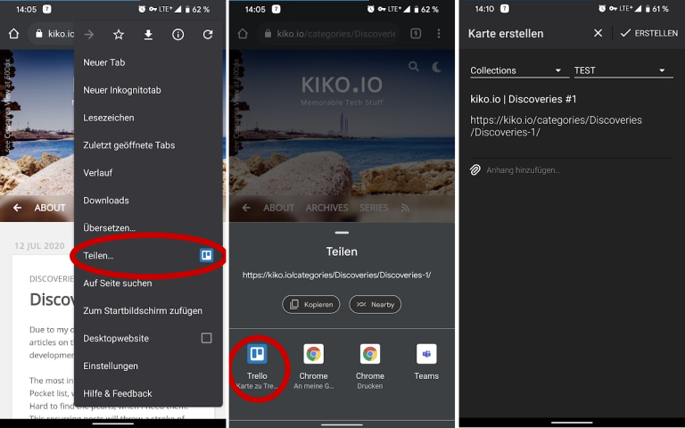
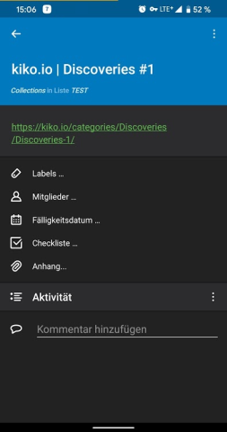
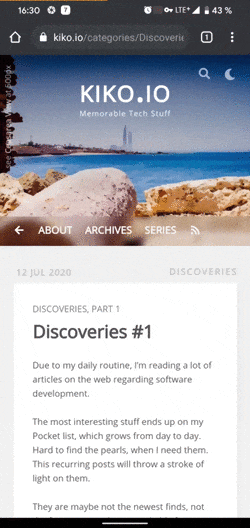
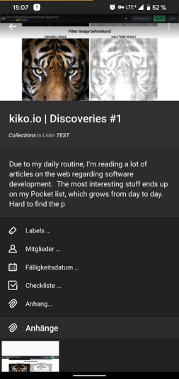

I was looking for a new way to store interesting website articles for reading later, as Pocket, my favourite tool until here, gets worse and worse. As I am a big Trello fan, I wanted to give it a chance to be Pockets successor on my smartphone, where I’m reading mostly.
On installing the Trello Android app, you will find a new SHARE target Add new Trello card, which is comfortable to use:
(Sry, for the German screenshots ;)

The result, website’s title and Url set, is nice at best:

… but Trello has a Bookmarklet, which does the job much better.
The following approach works best in the Google Chrome browser.
First, a Bookmarklet is a small piece of JavaScript, which is stored as a bookmark in your browser. As you can’t actually create such a Bookmarklet in your Android Chrome, you have to create it in your desktop Chrome and switch on the bookmark sync of chrome. You should right away choose a short, concise name for the bookmark, so you find it easier in Android Chrome afterwards. I called it 2TrelloCard, because few websites start with an number.
After Chrome’s sync is done, go to any website do you want to store as a Trello card. Now enter the Url box and type the name of the bookmarklet and select it.
Instead of requesting a different page, Chrome executes the JavaScript of the Bookmarklet against the currently open website. This script shows a Trello dialog, where you can choose, which board and list the new card should be created on.

This card creation method not only sets the title of the card, but fills the description with the meta description of the page, adds the first found meta image as cover and adds the Url as an attachment:
